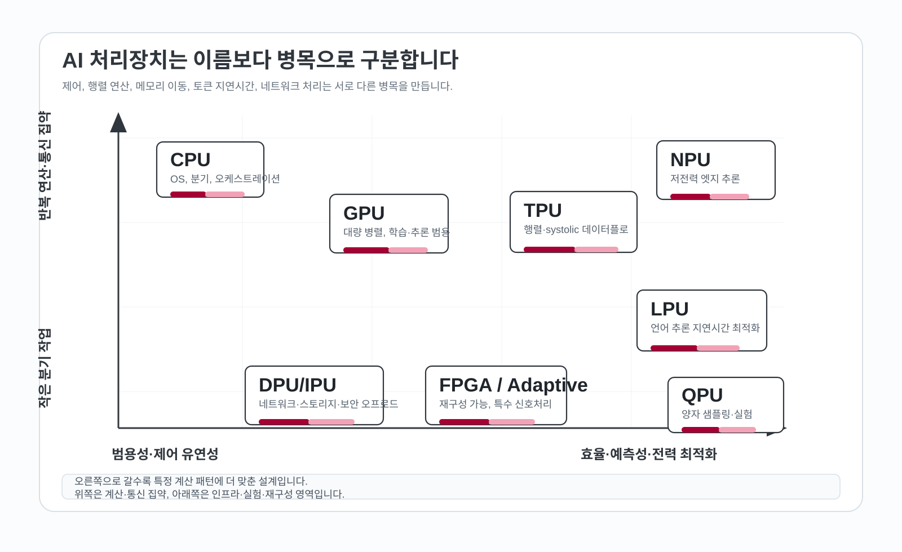
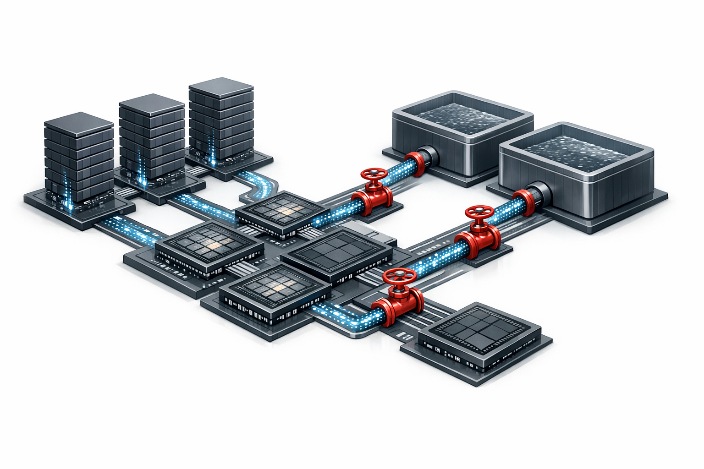
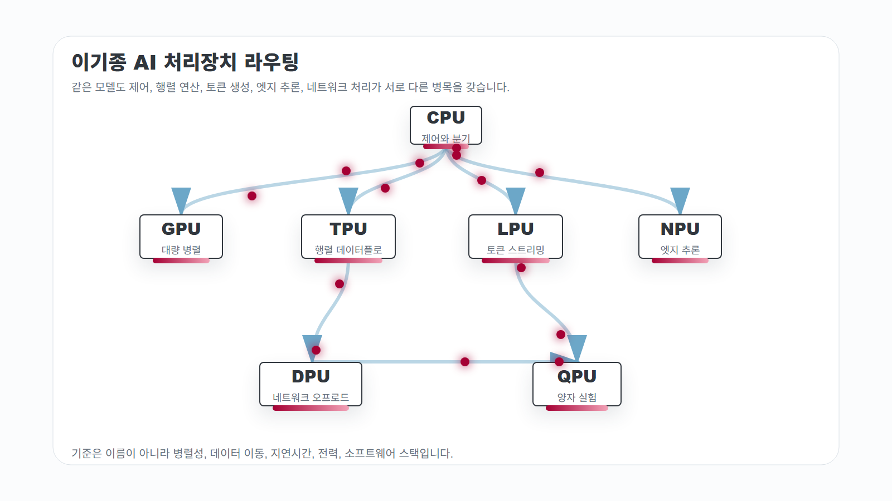
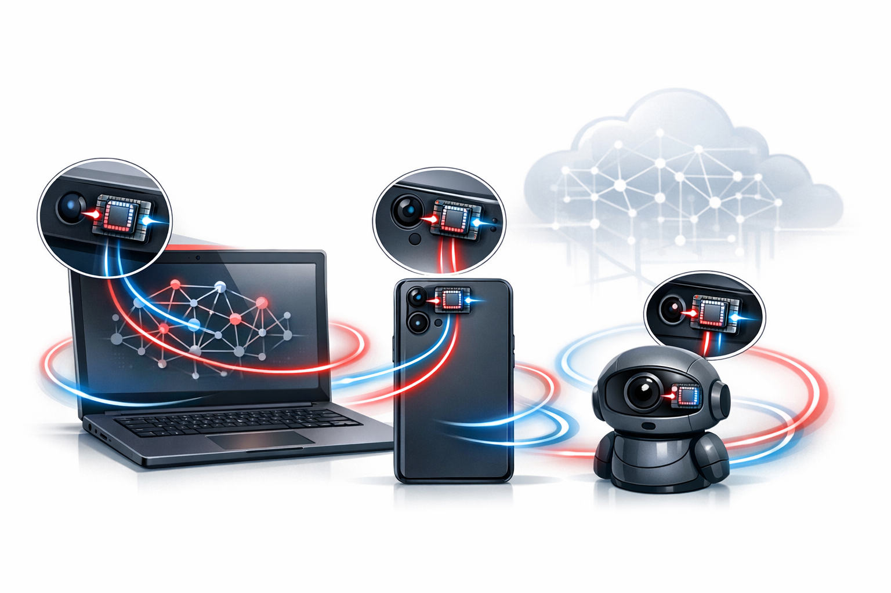
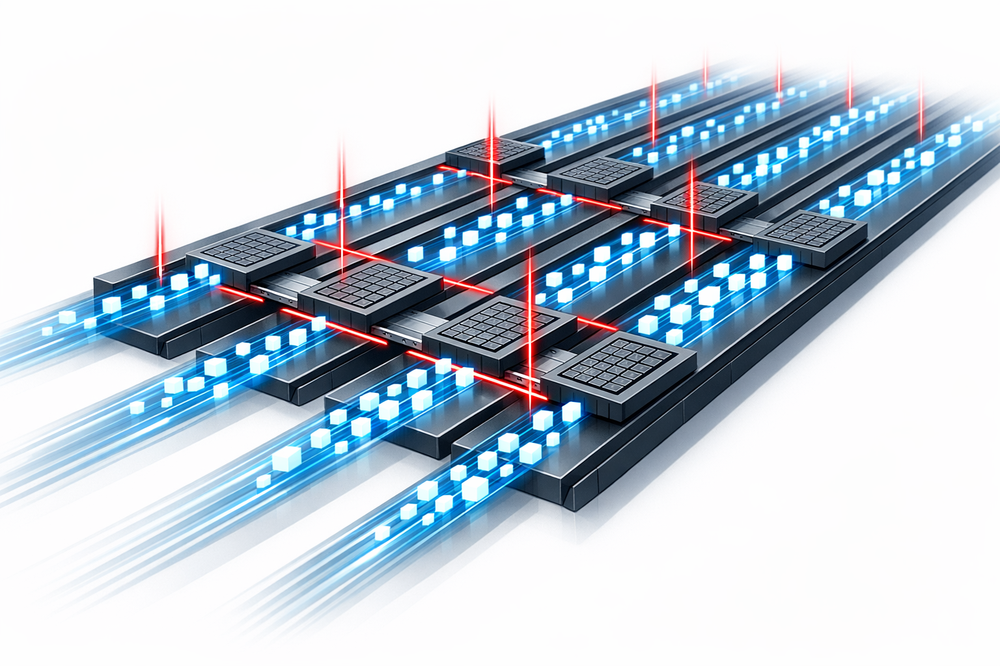
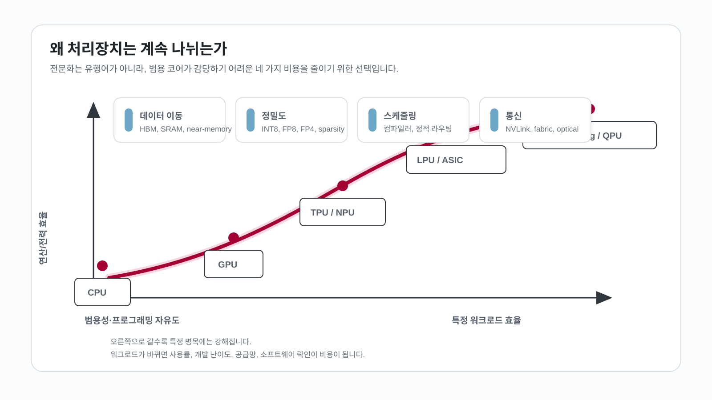

AI 하드웨어 논의는 종종 새 약어의 경쟁처럼 보입니다. GPU가 AI를 키웠고, TPU가 클라우드 학습과 추론을 밀어 올렸으며, NPU가 노트북과 스마트폰 안으로 들어왔습니다. 최근에는 LPU처럼 언어모델 추론을 전면에 내세운 이름도 등장했고, 데이터센터 안쪽에서는 DPU/IPU가 네트워크와 보안을 맡습니다. QPU는 조금 다른 시간표 위에서 양자 샘플링과 오류정정의 가능성을 시험하고 있습니다.
이 이름들을 일렬로 세워 “어느 것이 더 높은 단계인가”로 읽으면 금방 헷갈립니다. 더 유용한 출발점은 각 칩이 어떤 지연과 비용을 줄이려 하는지 보는 것입니다. 분기와 운영체제 제어가 많은 작업, 행렬 곱이 끝없이 반복되는 작업, 메모리에서 데이터를 가져오는 데 시간이 많이 드는 작업, 토큰 하나의 지연시간이 서비스 품질을 좌우하는 작업은 같은 하드웨어에서 같은 효율로 처리되지 않습니다. 처리장치가 늘어난 배경에는 계산의 모양이 갈라진 현실이 있습니다.

계산의 모양이 칩을 가릅니다
처리장치를 구분할 때 가장 먼저 볼 기준은 네 가지입니다.
첫째, 병렬성의 모양입니다. CPU가 잘하는 일은 분기, 예외 처리, 운영체제, 작은 작업들의 조율입니다. GPU가 잘하는 일은 같은 명령을 많은 데이터에 반복 적용하는 대량 병렬 처리입니다. TPU는 이 중에서도 신경망의 행렬 연산과 데이터플로를 더 강하게 고정합니다. NPU는 작은 전력 예산 안에서 이미지, 음성, 언어 모델 일부를 로컬에서 돌리는 데 맞춥니다.
둘째, 데이터가 어디에 있느냐입니다. 현대 AI에서 비용은 곱셈만이 아닙니다. HBM, DRAM, SRAM, 캐시, 네트워크, 스토리지 사이를 오가는 데이터 이동이 전력과 시간을 크게 잡아먹습니다. Google Cloud TPU 아키텍처 문서는 TPU의 MXU가 systolic array로 행렬 연산을 처리한다고 설명합니다. 이 구조는 곱셈기를 많이 두는 데서 멈추지 않고, 데이터가 연산기 사이를 규칙적으로 지나가도록 만듭니다.
셋째, 숫자의 정밀도입니다. FP32가 필요한 작업도 있지만, 많은 추론과 학습은 BF16, FP16, FP8, FP4, INT8, W4A8 같은 낮은 정밀도를 조합해 처리할 수 있습니다. NVIDIA Blackwell 문서는 Transformer Engine이 FP4를 가능하게 하는 미세 스케일링을 강조하고, Google TPU 8t/8i 발표는 FP4와 on-chip SRAM, collective acceleration을 함께 설명합니다. 낮은 정밀도는 계산량과 함께 메모리에서 옮겨야 하는 비트 수를 줄입니다.
넷째, 소프트웨어 스택입니다. 칩 성능은 compiler, runtime, kernel library, framework, scheduling 도구를 통해 제품 성능으로 바뀝니다. GPU가 오래 강했던 이유는 CUDA, cuDNN, TensorRT, NCCL 같은 생태계가 함께 있었기 때문입니다. TPU는 XLA, JAX, PyTorch preview, Pathways 같은 구글 스택과 같이 움직이고, AWS Trainium은 Neuron SDK를 전면에 둡니다. LPU를 말할 때도 Groq가 강조하는 부분은 static scheduling과 deterministic execution입니다.

왜 새 칩이 계속 나오는가
컴퓨터 구조 관점에서 배경은 분명합니다. Hennessy와 Patterson의 “A New Golden Age for Computer Architecture”가 짚은 것처럼, 과거처럼 공정 미세화와 클럭 증가만으로 범용 성능을 계속 올리기 어려워졌습니다. AI workload는 이 문제를 더 크게 드러냈습니다. 모델은 더 커졌고, sequence length는 길어졌고, MoE 모델은 chip 간 통신을 더 복잡하게 만들었습니다.
이 조건에서 전문화가 시작됩니다. GPU는 CPU보다 훨씬 많은 연산기를 놓고, 같은 형태의 연산을 병렬로 처리합니다. TPU는 신경망에 자주 나오는 matrix multiply가 물리적으로 잘 흐르도록 배열을 고정합니다. NPU는 데이터센터 최고 성능 대신 배터리, 발열, 개인정보, 항상 켜진 기능을 우선합니다. DPU는 GPU 앞단에서 네트워크와 스토리지가 막히는 시간을 줄입니다.

최근 발표를 보면 이 방향이 더 뚜렷합니다. Google TPU 8t/8i는 하나의 TPU 세대 안에서도 pre-training용 8t와 serving/reasoning용 8i를 나눕니다. 8t는 대규모 학습, embedding, SparseCore, torus 기반 확장에 무게가 있고, 8i는 sampling, long-context KV cache, collective acceleration, 낮은 latency network topology에 더 초점을 둡니다. 같은 “TPU” 안에서도 학습과 추론의 병목이 달라졌다는 뜻입니다.
NVIDIA Blackwell은 GPU와 함께 NVLink, NVLink Switch를 전면에 둡니다. 대형 모델에서는 GPU 한 장의 성능만큼이나 수십, 수백 GPU가 하나의 메모리·통신 영역처럼 움직이는지가 중요합니다. AWS Trainium3도 Tensor, Vector, Scalar, GPSIMD engine, HBM3e, W4A8 quantization, collective cores, NeuronLink/NeuronSwitch, Neuron SDK를 한 묶음으로 제시합니다. 칩 하나의 peak FLOPS보다 연산기가 데이터를 기다리지 않게 만드는 시스템이 중요해졌습니다.
역할별로 다시 읽기
아래 표는 제품 사양보다 역할을 먼저 봅니다. 실제 시스템은 이 역할을 여러 칩과 소프트웨어 계층으로 섞어 씁니다.
| 처리장치 | 가장 잘 맞는 일 | 설계 원리 | 강점 | 한계 |
|---|---|---|---|---|
| CPU | OS, 분기, control plane, 데이터 전처리, 작은 batch 추론 | 범용 core, branch prediction, cache hierarchy, vector/matrix extension | 모든 작업의 기준점, 개발 편의, orchestration | 대규모 dense tensor throughput과 전력 효율은 전용 가속기보다 불리 |
| GPU | 학습, 대규모 추론, simulation, dense tensor 병렬 처리 | SIMT/SIMD, Tensor Core, HBM, 고속 interconnect | 생태계와 범용성, 높은 throughput, 모델·프레임워크 지원 | utilization, memory bandwidth, 전력, 공급망, 비용이 큰 변수 |
| TPU | 클라우드 ML 학습·추론, 행렬 중심 workload | systolic array, MXU, XLA/JAX/Pathways, cloud-scale fabric | 특정 ML workload에서 효율과 규모 확장 | 플랫폼 의존성, workload portability, 커스텀 kernel 진입장벽 |
| NPU | 모바일·PC·엣지 inference, always-on AI | 저전력 neural accelerator, INT8/low precision, SoC 통합 | 배터리, 개인정보, 낮은 latency, 로컬 실행 | 메모리·모델 크기 제약, 학습보다는 추론 중심 |
| LPU | LLM token serving, 낮은 tail latency | static scheduling, deterministic dataflow, SRAM 중심 weight/data 흐름 | 예측 가능한 지연시간, token throughput, serving 비용 최적화 가능성 | 벤더 정의가 강하고 범용 표준 범주는 아님 |
| DPU/IPU | 네트워크, 스토리지, 보안, virtualization offload | programmable SmartNIC, packet processing, crypto/storage acceleration | CPU/GPU가 모델 계산에 집중하도록 인프라 부담 제거 | 모델 연산 자체를 대체하지 않음 |
| QPU | 양자 샘플링, 최적화 연구, 물질·화학 simulation 후보 | qubit, superposition, entanglement, error correction | 특정 문제에서 장기적 가능성 | 현재는 일반 AI 학습·추론 대체재가 아님 |

CPU: AI 시스템의 조율자로 남는 칩
CPU는 AI 시대에도 시스템의 조율자입니다. 데이터 로딩, 전처리, 운영체제, 네트워크 stack, scheduling, 작은 batch 처리, 예외 처리, service orchestration은 CPU가 맡습니다. CPU 자체도 AI workload에 맞춰 바뀌고 있습니다.
Intel AMX는 Xeon core 안에 행렬 연산용 하드웨어 블록을 넣어 BF16과 INT8 AI workload를 CPU에서 더 잘 처리하게 합니다. Arm SME와 SME2는 Arm CPU ISA 자체에 matrix-heavy AI/ML workload를 위한 확장을 넣습니다. 다시 말해 CPU와 accelerator의 경계도 흐려지고 있습니다. 작은 모델, 낮은 batch, 데이터가 이미 CPU memory에 있는 상황에서는 CPU inference가 충분히 실용적일 수 있습니다.
GPU: 범용 병렬 처리의 표준 플랫폼
GPU는 AI 하드웨어의 중심축입니다. 이유는 단순합니다. 딥러닝의 핵심 연산은 큰 행렬과 tensor 연산이고, GPU는 대량 병렬 처리를 오랫동안 발전시켜 왔습니다. 여기에 CUDA와 라이브러리 생태계가 붙으면서 모델 연구자와 엔지니어가 가장 먼저 찾는 플랫폼이 됐습니다.
최근 GPU 경쟁은 GPU 크기만으로 설명되지 않습니다. Blackwell 계열에서 보듯 FP4 같은 낮은 정밀도, transformer-optimized engine, GPU 간 통신 fabric, rack-scale architecture가 함께 묶입니다. 모델이 커질수록 한 GPU 안의 연산보다 GPU 사이의 collective communication, KV cache 이동, memory hierarchy가 성능을 좌우합니다. GPU는 여전히 가장 넓은 선택지입니다. 비용과 전력, utilization까지 넣으면 workload별 경제성은 달라집니다.
TPU: 행렬 데이터플로와 클라우드 스택의 결합
TPU의 강점은 GPU와의 단순 비교보다 행렬 데이터플로를 직접 다룰 때 더 잘 보입니다. 초기 TPU 논문은 데이터센터 inference에서 신경망 workload를 도메인 특화 방식으로 처리하면 범용 CPU/GPU와 다른 효율을 얻을 수 있음을 보였습니다. TPU의 systolic array는 데이터가 연산기 배열을 규칙적으로 지나가며 multiply-accumulate를 수행하게 합니다.
2026년 TPU 8t/8i 발표가 흥미로운 이유는 TPU 안에서도 역할이 더 쪼개졌기 때문입니다. Google은 8t를 대규모 pre-training과 embedding-heavy workload에, 8i를 sampling, serving, reasoning에 맞춘 시스템으로 설명합니다. 이는 “AI 가속기”라는 하나의 이름이 너무 넓어졌다는 신호입니다. 학습, post-training, inference, long-context reasoning, agentic workload가 서로 다른 통신과 메모리 패턴을 갖기 때문입니다.
NPU: AI를 클라우드에서 손 안으로 가져오는 장치
NPU는 AI PC, 스마트폰, 카메라, 자동차, IoT 장치에서 중요해지고 있습니다. Microsoft Copilot+ PC 개발자 가이드는 여러 Windows AI 기능에 40+ TOPS NPU가 필요하다고 설명하고, Windows가 CPU, GPU, NPU 중 적절한 곳에 작업을 배정한다고 말합니다. Apple M4 발표도 Neural Engine의 38 TOPS를 전면에 둡니다.
TOPS는 조심해서 읽어야 합니다. TOPS는 대체로 정밀도, sparsity, batch size, memory bandwidth, 실제 kernel support에 따라 체감 성능과 크게 달라집니다. 같은 40 TOPS라도 어떤 모델을 어느 precision으로, 어느 runtime에서, 얼마나 오래 발열 제한 없이 돌리는지가 다릅니다. NPU의 가치는 클라우드 GPU와의 속도 경쟁보다, 네트워크 없이 낮은 전력으로 로컬 inference를 안정적으로 수행하는 데 있습니다.

LPU: 언어모델 serving 병목을 드러내는 이름
LPU라는 이름은 CPU, GPU처럼 오래 표준화된 범주로 쓰이지 않습니다. 현재는 Groq가 언어모델 추론 전용 아키텍처를 설명할 때 강하게 밀고 있는 명칭입니다. 그래도 이 이름을 볼 필요는 있습니다. 언어모델 서비스의 병목이 학습 throughput에서 token latency와 serving cost로 이동하고 있다는 점을 선명하게 드러내기 때문입니다.
Groq의 LPU 설명은 deterministic execution을 강조합니다. 실행 단계가 clock cycle 수준에서 예측 가능하고, data bandwidth와 compute resource contention을 줄이는 방향입니다. Groq LPU architecture 페이지는 SRAM을 primary weight storage로 쓰고, compiler가 static scheduling을 통해 compute와 network timing을 예측한다고 설명합니다.
GPU는 범용성과 throughput이 강합니다. 많은 사용자 요청이 섞이는 serving 환경에서는 tail latency, cache behavior, scheduling overhead가 별도의 문제로 올라옵니다. LPU식 설계는 “토큰이 규칙적으로 지나가는 공장”을 만들려는 시도입니다. 모델 구조가 바뀌거나, workload가 multimodal·tool-use·retrieval-heavy로 복잡해질 때 얼마나 유연하게 대응할 수 있는지가 관건입니다.

DPU/IPU: AI 데이터센터의 인프라 병목을 맡는 칩
DPU/IPU는 모델의 행렬 연산보다 데이터센터 인프라 경로를 다룹니다. GPU cluster가 커질수록 네트워크, storage, security, virtualization, telemetry가 CPU 시간을 잡아먹습니다. 이 일을 CPU가 계속 맡으면 GPU가 데이터를 기다립니다. SmartNIC에서 출발한 DPU/IPU가 packet processing, storage path, encryption, isolation, observability를 맡는 이유가 여기에 있습니다.
NVIDIA BlueField는 BlueField-3 DPU를 400Gb/s infrastructure compute platform으로, BlueField-4를 800Gb/s AI factory infrastructure platform으로 설명합니다. NVIDIA 설명에서 반복되는 단어는 infrastructure입니다. 대형 AI 시스템에서 연산 장치는 혼자 성능을 내지 못합니다. 데이터가 잘 들어오고, 잘 나가고, 안전하게 분리되고, 스토리지와 네트워크가 막히지 않아야 합니다.
QPU: 다른 시간표 위의 가속기
QPU는 CPU/GPU/NPU/TPU와 성숙도와 적용 경로가 다릅니다. 양자컴퓨터는 특정 계산을 완전히 다른 물리 원리로 풀려는 접근입니다. Google Willow 발표는 quantum error correction에서 진전을 보였고, useful beyond-classical computation이 다음 과제라고 설명합니다. 이 연구 신호를 곧바로 LLM 학습 비용 절감이나 일반 inference 가속으로 연결하기에는 아직 거리가 있습니다.
AI 관점에서 QPU가 연결될 수 있는 영역은 최적화, 샘플링, 확률 모델, 물질·화학 simulation입니다. 대부분의 기업 AI stack에서 QPU는 아직 production inference path에 속하지 않습니다. QPU를 검토할 때는 GPU cluster나 NPU 제품 도입 판단과 같은 성능 지표를 그대로 가져오지 않는 편이 안전합니다.
놓치기 쉬운 추가 전략
CPU/GPU/TPU/NPU/LPU 밖에서도 여러 전략이 동시에 실험되고 있습니다. 각각은 다른 병목을 보고 있습니다.
FPGA와 adaptive compute는 ASIC과 범용 프로세서 사이에 있습니다. AMD Versal AI Engine은 VLIW/SIMD vector processor tile, programmable logic, Arm core, network-on-chip을 묶어 DSP와 ML inference를 처리합니다. 무선, radar, 산업 vision, medical imaging처럼 신호처리와 ML이 붙어 있는 분야에서는 고정 ASIC보다 유연하고, CPU보다 빠른 중간 선택지가 될 수 있습니다.
클라우드 custom ASIC은 hyperscaler의 비용 구조에서 나옵니다. AWS Trainium3는 PyTorch, vLLM, Hugging Face, Neuron SDK, collective cores, HBM3e를 함께 내세웁니다. Google TPU와 AWS Trainium은 클라우드 운영자가 workload와 software stack을 함께 통제할 수 있을 때 힘을 냅니다.
wafer-scale은 메모리와 연산기를 한 웨이퍼 위에 크게 배치합니다. Cerebras WSE-3는 wafer-scale engine, 대규모 on-chip memory/bandwidth, single-device simplicity를 강조합니다. 접근 자체는 대담합니다. 물리적으로 큰 칩은 생산 수율, 시스템 가격, 냉각, software mapping, 모델 크기와 메모리 요구 사이의 균형이 관건입니다.
near-memory와 compute-in-memory는 데이터를 연산기까지 가져오는 비용을 줄이려는 시도입니다. Qualcomm의 AI200/AI250 발표는 AI250에서 near-memory computing 기반의 effective memory bandwidth 개선을 강조합니다. analog compute-in-memory나 SRAM/DRAM 가까운 연산도 데이터 이동 비용을 줄이려는 같은 문제의식에서 나옵니다.
photonic interconnect는 칩 안의 계산보다 칩 사이 통신을 겨냥합니다. Lightmatter는 Passage와 Guide를 AI supercomputer scale용 photonic interconnect platform으로 설명합니다. 대형 모델은 단일 GPU보다 cluster 통신이 병목이므로, 빛을 이용한 고대역·저전력 연결이 장기적으로 중요한 축이 될 수 있습니다.
neuromorphic computing은 또 다른 장기 옵션입니다. Intel neuromorphic computing 페이지는 Loihi 2가 sparse event-driven computation, asynchronous spiking neural networks, integrated memory and computing을 활용한다고 설명합니다. 이 방향은 현재 주류 LLM training/inference를 대체한다기보다, 센서 이벤트, 로보틱스, 항상 켜진 저전력 지능에서 먼저 의미가 생길 가능성이 큽니다.
한계: 약어가 많아질수록 더 조심해야 할 것
첫 번째 함정은 TOPS 착시입니다. TOPS는 같은 정밀도와 같은 sparsity 조건, 같은 memory bandwidth, 같은 compiler support에서 비교해야 의미가 있습니다. NPU의 40 TOPS, Apple Neural Engine의 38 TOPS, 데이터센터 accelerator의 PFLOPS는 모두 서로 다른 조건에서 나온 수치입니다. 숫자를 볼 때는 bit-width, batch size, sequence length, model architecture, thermal limit, actual runtime support를 함께 봐야 합니다.
두 번째 함정은 사용률입니다. accelerator도 데이터가 늦게 오면 놀고 있습니다. TPU 8t의 TPUDirect Storage, TPU 8i의 on-chip SRAM과 CAE, NVIDIA NVLink, Trainium collective cores, DPU offload가 모두 같은 문제를 다룹니다. 연산기 수만큼이나 연산기가 데이터를 기다리지 않게 만드는 경로가 중요합니다.
세 번째 함정은 프로그래밍 모델입니다. GPU는 생태계가 강하고, TPU는 Google Cloud stack 안에서 힘이 나며, Trainium은 Neuron SDK를 통해 cloud economics와 연결됩니다. LPU와 추론 ASIC은 serving workload에 맞으면 강력할 수 있지만, 모델 구조와 runtime이 자주 바뀌는 환경에서는 유연성이 비용으로 돌아올 수 있습니다.
네 번째 함정은 공급망과 운영입니다. 데이터센터 가속기는 칩만 사면 끝나지 않습니다. HBM 공급, rack power, liquid cooling, network fabric, software licensing, observability, driver version, security isolation, cloud portability가 같이 따라옵니다. 엣지 NPU도 마찬가지입니다. 모델 변환, quantization, vendor SDK, Windows/Android/macOS API support가 실제 도입 난이도를 좌우합니다.

미래 경쟁은 workload 라우팅에서 갈립니다
2026년 6월 기준으로 가장 현실적인 전망은 이기종 조합입니다. 데이터센터에서는 GPU supernode, TPU/Trainium 같은 cloud ASIC, inference ASIC, DPU/IPU, high-speed fabric이 섞입니다. PC와 모바일에서는 CPU, GPU, NPU가 SoC 안에서 함께 움직이고, 운영체제와 runtime이 작업을 배정합니다. 연구 영역에서는 QPU, neuromorphic, analog/near-memory, photonic interconnect가 각각 다른 병목을 겨냥합니다.
앞으로 더 자주 묻게 될 질문은 “어떤 workload를 어디에 보낼 것인가”입니다. 긴 문맥 LLM serving에서는 KV cache와 interconnect가 중요하고, 이미지·음성 always-on inference에서는 NPU의 전력과 로컬 privacy가 중요합니다. 학습에서는 GPU/TPU/Trainium cluster의 collective communication과 reliability가 중요하고, agentic system에서는 CPU orchestration, tool execution, storage, network, security까지 전체 경로가 중요합니다.
실무 도입 관점에서는 다음 순서로 검토하는 것이 좋습니다.
- 모델의 병목이 compute인지 memory bandwidth인지, network인지, tail latency인지 먼저 측정합니다.
- 목표가 training인지 fine-tuning인지 batch inference인지 real-time serving인지 분리합니다.
- precision과 quantization 허용 범위를 정합니다. FP4/INT8/W4A8을 쓸 수 있는지에 따라 경제성이 크게 달라집니다.
- software stack을 봅니다. framework, compiler, runtime, kernel, monitoring, deployment tool이 실제 팀 역량과 맞아야 합니다.
- 하드웨어 숫자보다 end-to-end latency, throughput per watt, utilization, cost per token, operational reliability를 봅니다.
우리에게 남는 판단
AI 처리장치의 분화는 당분간 계속됩니다. 이유는 간단합니다. AI workload가 하나로 수렴하지 않고 있기 때문입니다. 거대한 pre-training, post-training, retrieval-augmented generation, long-context reasoning, multimodal serving, on-device AI, robotics, secure enterprise inference는 서로 다른 시간 스케일과 데이터 경로를 갖습니다. 하나의 범용 칩이 이 경로를 모두 최적으로 맡는 상황은 당분간 기대하기 힘듭니다.
약어가 늘어날수록 기준은 더 단순해야 합니다. CPU는 전체 시스템을 조율하고, GPU는 가장 넓은 대량 병렬 플랫폼을 제공하며, TPU와 Trainium 같은 cloud ASIC은 특정 ML lifecycle을 효율화합니다. NPU는 엣지와 AI PC를 현실화하고, LPU와 inference ASIC은 token latency와 serving cost를 겨냥합니다. DPU/IPU는 모델 주변의 인프라를 정리하고, QPU·neuromorphic·photonic·near-memory 전략은 아직 다른 성숙도에서 미래 병목을 실험합니다.
AI stack을 평가할 때는 처리장치 이름의 수보다 데이터가 어디에서 멈추는지를 먼저 봐야 합니다. 앞으로의 경쟁은 칩 하나의 peak 성능보다, 모델·compiler·runtime·memory·network·security를 함께 묶는 시스템 설계에서 갈릴 가능성이 큽니다.
참고 자료
- Google Cloud: Inside the eighth-generation TPU, TPU 8t and TPU 8i
- Google Cloud: TPU architecture
- Jouppi et al., In-Datacenter Performance Analysis of a Tensor Processing Unit
- Hennessy and Patterson, A New Golden Age for Computer Architecture
- NVIDIA Blackwell Architecture
- NVIDIA GB200 NVL Multi-Node Tuning Guide
- AWS Trainium
- Microsoft Learn: Develop AI applications for Copilot+ PCs
- Apple: M4 chip announcement
- Groq: The Groq LPU explained
- Groq: LPU architecture
- NVIDIA BlueField Networking Platform
- Google Quantum AI: Willow quantum chip
- Cerebras WSE-3
- AMD Versal AI Engine
- Lightmatter photonic interconnects
- Intel Neuromorphic Computing